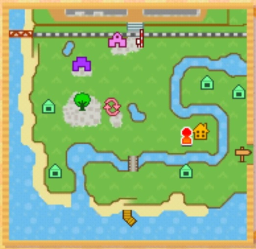
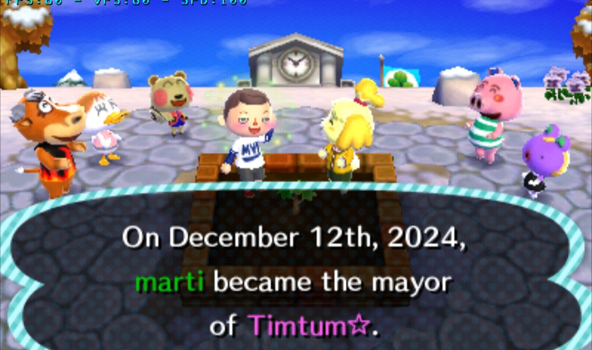
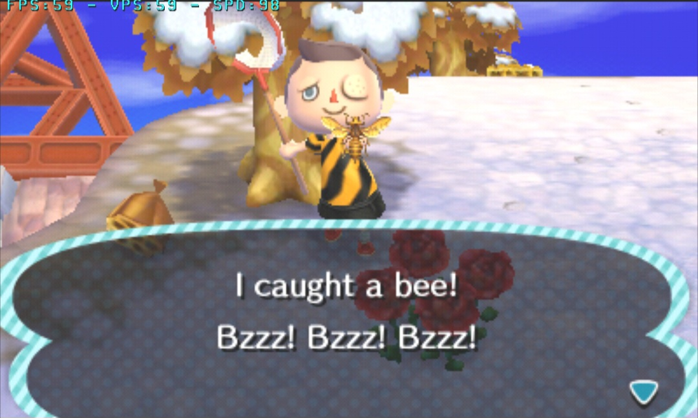
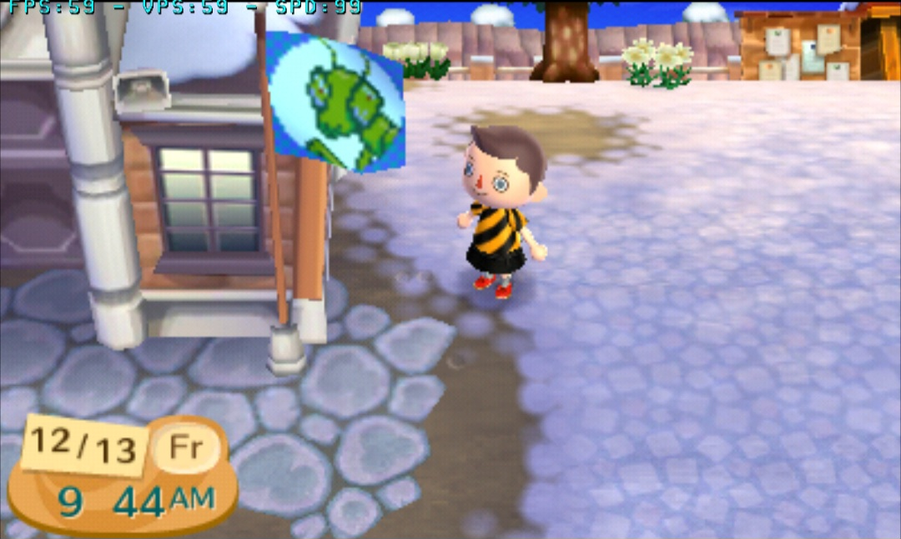
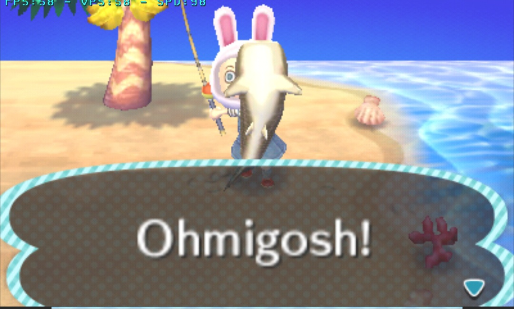

* total que eu consigo pegar entre dezembro e março incluindo tortimer.
Dia 0
oii 8)
Acabei de começar uma nova cidade no New Leaf! O nome da cidade é Timtum ☆ e o mapinha dela é assim:

Gostei que tem tipo um centrinho, o retail, o plaza e a prefeitura tão os 3 pertinho e o rio faz um S, narcisismo é tudo.
Os villagers que tão morando aqui são o Angus, a Pompom, a Gigi, o Curly e a Cally. Olha agnt comemorando minha posse:

A minha favorita por enquanto é a Pompom, ela é um amorzinho e o nome dela é mto fofo.
Bom, primeiro dia nn tem mta coisa pra fazer, plantei a árvore, coloquei minha casa, vendi todas as laranjas e conchas e comecei a
guardar pra pagar a minha casa e conseguir ir pra ilha do tortimer. Uma das minhas partes favoritas do AC é fazer coleção, no Nookling's
Junction tinha a rede e a pá, ent nn vai tar dando pra começar a coleção de peixe ainda mas eu já peguei a abelha e a bagworm.

Tou feliz q na versão Welcome Amiibo da pra segurar a rede enquanto balança a árvore, mto mais fácil kjaskajsdakjsd
Consegui fazer o primeiro pagamento já ent amanhã já vou tar de casa nova.
Até amanhã posso tentar encontrar mais uns insetinhos perdidos, mas fora isso é só esperar.
quinta, 12 de dezembro de 2024, 13:06
Dia 1
oii 8)
Dia bem normal, Nookling's tava vendendo a vara de pescar ent conseguimos fazer um progressiho nesse sentido.
Porém, enquanto eu tava atrás dos peixes relembrei meu maior inimigo nesse jogo: eu mesmo (feat. meus reflexos terríveis). Eu sou MUITO ruim em pescaria MEU DEUS DO CÉU QUE FRUSTRANTE.
Mas, mesmo assim conseguimos fazer um progresso legal. O peixe que mais me da medo é o pike pq eu só tenho esse mês e ele é bem difícil, mas, a esperança é a última que morre.
Não joguei ontem a noite e hj a noite tbm nn vou conseguir ent nn peguei nada que spawne só dps das 16h ainda.
Terminei de pagar a minha casa ent tou esperando o Kapp'n chegar pq aí sim vai ter progresso.
A melhor maneira de fazer dinheiro agora no inverno sem ter ele é com ctz com os bonecos de neve, vc pega os floquinhos, da pra eles e os móveis que eles te dão valem
quase 10k cada.
Também troquei a bandeira e a musiquinha da cidade pra tentar aumentar a aprovação pra conseguir fazer obras na cidade e agr a bandeira é um louva deus e eu queria colocar System
na musiquinha mas não temos sustenidos e nem bemols ent eles ficaram fora de cogitação, acabei coloca=ndo Daft Punk com Around the World, mas não sei se gostei.
A minha cidade antiga tinha o hino da União Soviética, genuinamente ficou muito bom kadjksjdfksjd mas eu nn queria repetir.

Até amanhã :)
sexta, 13 de dezembro de 2024, 13:02
Dias 2 e 3: Como é bom dominar o mundo!
oii 8)
MUAHAHAHA DÁ UMA OLHADA NO PROGRESSO NESSES BIXO MEU!
Bugs de 3 pra 30, Peixes de 15 pra 28 e Criaturas de 0 pra 17!!!
10x, quase 2x e ∞x mais!!! O novo habitat natural de tudo e todos agora é meu museu.
Acabou. Acabou pra todo mundo.
Enfim, no dia 2 eu não joguei muito, só o suficiente pra liberar a tortimer no dia seguinte. E QUE DIA SEGUINTE, MEUS AMIGOS. Tiveram até rare fishing W's peguei um saw shark E um whale shark. TOOOME.

Agora sim esse negócio vai engatar, já pedi uma expansão pra minha casinha, faturei 200K com essas idas pra tortimer (leve em conta que todos os novos eu tou levando pro museu) e ganhei a aprovação da galera,
logo logo estarei construindo pontes e acampamentos e expansões pro museu. Estou mto animada e mto feliz com o progresso pq pelo menos pra mim isso é mta coisa pra esse tantinho de dias.
Em cima disso: o STITCHES. S TI TCHES está vindo morar em Timtum ☆. Pompom, vc vai ter competição.
Mas agora preciso de sono, continuaremos a dominar o mundo amanhã.
domingo, 15 de dezembro de 2024, 23:33